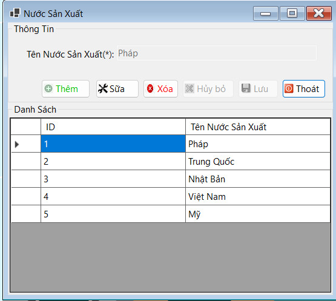

Hướng dẫn sử dụng màn hình Nước sản xuất.
Trong bối cảnh quản lý nhân viên như được thể hiện trong ảnh chụp màn hình, "Nước sản xuất" có thể không liên quan trực tiếp. Tuy nhiên, nếu bạn đang đề cập đến cụm từ "Nước sản xuất" trong ngữ cảnh chung hoặc một hệ thống quản lý khác (ví dụ như quản lý hàng hóa hoặc sản phẩm), thì "Nước sản xuất" thể hiện những điều sau:
1: Nguồn gốc sản phẩm: Nước sản xuất là đơn vị hoặc công ty chịu trách nhiệm sản xuất ra sản phẩm. Điều này giúp xác định nguồn gốc của sản phẩm.
2: Chất lượng sản phẩm: Thương hiệu của Nước sản xuất thường liên quan đến chất lượng sản phẩm. Người tiêu dùng và doanh nghiệp thường dựa vào uy tín của Nước sản xuất để đánh giá chất lượng sản phẩm.
3: Độ tin cậy và bảo hành: Nước sản xuất cũng chịu trách nhiệm về các chính sách bảo hành và dịch vụ sau bán hàng. Một Nước sản xuất uy tín thường cung cấp dịch vụ bảo hành tốt và hỗ trợ khách hàng hiệu quả.
4: Thông tin truy xuất: Trong nhiều ngành công nghiệp, thông tin về Nước sản xuất rất quan trọng để truy xuất nguồn gốc sản phẩm, đặc biệt là trong ngành thực phẩm, dược phẩm, và công nghệ.
5:Đặc điểm kỹ thuật và tiêu chuẩn: Các sản phẩm từ những Nước sản xuất khác nhau có thể tuân theo các tiêu chuẩn và đặc điểm kỹ thuật khác nhau. Điều này quan trọng trong việc đảm bảo rằng sản phẩm phù hợp với nhu cầu và yêu cầu kỹ thuật của người dùng.
Bước 1: Click "Thêm" (Add)
Bước 2: Nhập Tên Nước Sane Xuất
Bước 3: Click "Lưu"
Bước 1: Chọn Nước Sản Xuất muốn sửa từ danh sách.
Bước 2: Nhấn "Sửa": Điều này sẽ bật các trường nhập liệu với thông tin của Nước Sản Xuất được chọn.
Bước 3: Chỉnh sửa thông tin: Sửa các trường cần thiết.
Bước 4:Nhấn "Lưu": Điều này sẽ cập nhật thông tin trong cơ sở dữ liệu.
Bước 1: Chọn Nước Sản Xuất
Bước 2: Nhấn "Xóa": Điều này sẽ hiển thị một hộp thoại xác nhận.
Bước 3:Xác nhận xóa: Xác nhận hành động để xóa khỏi cơ sở dữ liệu.
Bước 1: Nhấn "Nhập": Điều này sẽ mở một hộp thoại file.
Bước 2: Chọn file nhập: Chọn file (thường là CSV hoặc Excel) chứa dữ liệu Nước Sản Xuất.
Bước 3: Tải file lên: Hệ thống sẽ đọc và nhập dữ liệu Nước Sản Xuất từ file vào cơ sở dữ liệu.
Bước 1: Nhấn "Xuất": Điều này sẽ xuất danh sách Nước Sản Xuất hiện tại ra một file.
Bước 2:Chọn định dạng xuất: Thường là CSV hoặc Excel.
Bước 3:Tải file về: Lưu file xuất ra vào hệ thống của bạn để sao lưu hoặc báo cáo.
Bước 1: Nhấn "Hủy bỏ": Điều này sẽ xóa bỏ bất kỳ thay đổi nào được thực hiện trong các trường nhập liệu và đặt lại chúng về trạng thái ban đầu mà không lưu.
Bước 1: Nhấn "Thoát": Điều này sẽ đóng cửa sổ quản lý Nước SX